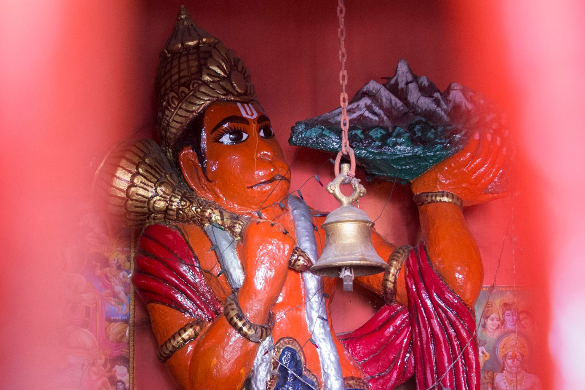

Обычно Марс проходит зодиакальный знак за 1,5–2 месяца, но каждые 2 года задерживается в каком-то на 6 по причине ретроградности. Расширенный (а чем длиннее, тем влиятельней) транзит Марса по Козерогу, дающему Марсу максимальную силу, – редкое комбо. Дополненное соединением Марса с Кету – тем более редкость; в последний раз такая конфигурация имела место аж в 1813 году.
Символизирующий мокшу огненный Кету привносит с собой отсечение, ограничение, сжатие, концентрацию, дистилляцию, извлечение эссенции [опыта], интериоризацию и интроверсию, устремленность к сути, в глубь вещей, к корням, в прошлое, а также бессознательное, состояние вне-ума, духовность. И сейчас отсекать, сжимать, дистиллировать и пр. он будет не что иное как / используя не что иное как энергию на пике, структурирующую/структурированную, укрепленную и целеустремленную (Марс экзальтирующий). Это подобно силе под давлением или силе И давлению, силе отсеченной (ограниченной) и силе отсекающей.
Марс в Козероге – сага об эффективности, неуклонном и планомерном достижении желаемого. Стратегия – тактика, все дела. Часто экзальтирующий Марс со знаком "+" уподобляют супер-воину – дисциплинированнному, заменяющему собой десяток – со знаком "-" – диктатору. Мне еще вспоминаются полководцы, легионы Рима, обезличенная военная мощь и муштра. Не связанный с войной ассоциативный ряд: инженеры, конструкторы, строители (в широком смысле). Прибавляя ко всей этой образности Кету, получим темы переустройства (следствие возврата к истокам / избавления от лишнего), сужения фокуса внимания на поставленных целях, предельной эффективности, тенденцию / необходимость [учиться] добиваться желаемого, интенсивно концентрироваться на задаче, действовать в условиях ограничений, лишений, выстраивать, держать оборону, преодолевать препятствия, управлять энергией и волей и пр.
Очень Хануман и его почитание сейчас в тему: он и воин, и йогин, и идеал служения. И научиться поможет, и перегибов избежать.
– А какие действия было бы неплохо предпринимать или на что обратить внимание разным типам людей, при подобной конфигурации на небе? А то ведь структурные могут стать структурнее, воинственные – воинственнее, что не всегда здраво..)
– Всем, вне зависимости от типажа, конфигурация предлагает вот такую мантру-присказку: "... и здраво/оправданно/нужно ли это / что предпринять, исходя из имеющихся целей и задач с учетом их иерархии, текущей и прогнозируемой ситуации, а также принципа оптимальной эффективности". :)
Транзит не про "вообще", не о балансе, срединном пути и здравости как таковых, абстрактных, он все увязывает с задачами и целями. Именно они стоят для него во главе угла, от них все раскручивается. Он предлагает каждому реализовать/прокачать/развить себя как стратега и тактика, что может включать в себя освоение теории, но опять же в плотной связи с целями и задачами, не выпуская их из вида. Балансировка личностных особенностей как задача номер 1 – тема для других транзитов и даже вообще внетранзитная, вневременная. Как и познание себя и сбережение здоровья)
В контексте нашего транзита если и типировать людей, то не по их личностным особенностям, а по стоящим перед ними задачам и/или по тому, как у них со стратегией, тактикой, оценкой ресурсов, себя как ресурса и пр. И это ну очень нетривиальная задача) я не замахнусь) Тут как никогда актуален индивидуальный подход в консультировании и советовании.
В общем, смотрим, а что там с целями вообще, с их иерархией, что с личными навыками прогнозирования и пр. Если затык уже на первых пунктах, значит ставим целеположение целью и айда познавать себя. С прногнозами не очень – культивируем и/или идем к опытным, мудрым людям и т.д. В любом случае помним про "нет" тоннельному видению, "да" осознанной концентрации, предполагающей открытость к обратной связи от окружающего мира, и что транзит общий для всех, а значит Наполеон разного масштаба может проснуться в каждом) Идти к своим целям придется среди людей, которые более активно, чем обычно, идут к своим, ну или более активно лежат в их направлении и могут активнее привлекать помощников), при этом тема "как же правильно идти/лежать" становится болезненнее. Обстановка повышенной взрывоопасности - в тренде коммуникация, неотъемлемая часть искусства достижения цели) Летом, когда Марс и Меркурий одновременно будут ретроградными, может наступить время реальных проверок того, как там с владением оным искусством)
Оффтоп: последние "Мстители", которые "Война бесконечности" – вполне себе иллюстрация к транзиту) Особенно пока Солнце – символ царя, единоличной, верховной власти – еще в экзальтации.
– В общем, как я поняла – активно идем достигать свои цели 😊 Вопрос в том, эта конфигурация поможет в этом (в достижении), или она просто "толкает" на это – типа человек вдруг осознал, что ему позарез нужно захватить мир🤣?
– Не столько активно, сколько искусно и собранно. А поможет или просто – это кому как, или все вместе)
– А в чем особенность соединения Марс – Кету во Вришчике по сравнению с этим?
– Нет привносимых Козерогом структурности, организации, стройки, практицизма вплоть до прагматизма, темы работы. Марс в Козероге сильнее Кету. Скорпион интровертен, неподвижен, работа и стройка – не его лейтмотив. Кету в Скорпионе получается сильнее Марса: усиливается тенденция к сворачиванию энергии, обращению ее и усилий внутрь. Не на внешние цели, например, или на внешние, но скрытно. Запас энергии, силы большой, но законсервированный, так просто не раскрывается – тоже вариант)
[Основной текст был написан для поста в "Инстаграме" – перенесен сюда вместе с обсуждениями.]

- Омкарнатх
- (Осинская Ольга)
- +7 (926) 050 0785
- omkarnath@9planets.ru
- 9planets@mail.ru
Записаться
Cтатьи
-

«Кали» Рукмини Бхаи Наир
В 1990 году это стихотворение получило первую премию на Втором Всеиндийском поэтическом конкурсе и рассматривается критиками как жемчужина современной индийской поэзии.
-

Лайфхак для затмений: 6 осей зодиака
Трактовать затмения в личных целях – легко! Вы можете сами определять важнейшие потенциальные проблемы и ставить задачи по их предупреждению. Надо всего лишь… запомнить ключевые характеристики осей зодиака. А теперь по порядку)
Приложения